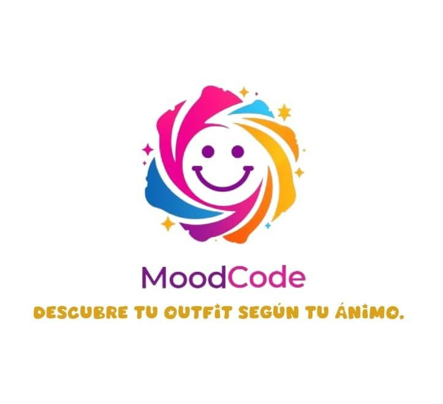
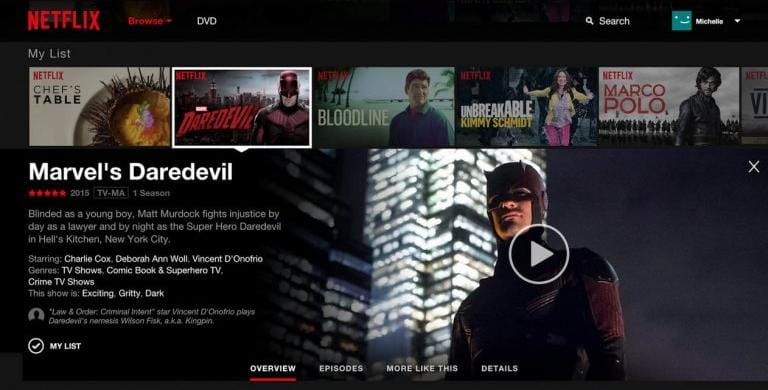

Aplicacion interactiva
Recreación de la interfaz de selección de usuarios usando Flexbox, estados hover y centrado absoluto.
Desarrolladora de Software
Especializada en maquetación web moderna, interfaces accesibles y lógica de programación. Apasiónada por construir soluciones digitales limpias y eficientes.
Aprendiz de la tecnología en Análisis y Desarrollo de Software (ADSO - SENA). Cuento con bases sólidas en:
¿Qué es? Es la habilidad de estructurar pensamientos y algoritmos paso a paso para resolver un problema de forma eficiente mediante código.
¿Para qué sirve? Permite desarrollar un pensamiento analítico para construir programas robustos, optimizar el uso de recursos y facilitar el aprendizaje de cualquier lenguaje de programación.
¿Qué es? Es el proceso de descomponer requerimientos complejos en componentes más sencillos e identificables.
¿Para qué sirve? Ayuda a comprender la raíz de las necesidades del usuario o cliente antes de escribir código, previniendo errores de arquitectura y garantizando soluciones precisas.
¿Qué es? Es el registro ordenado y detallado del diseño, la arquitectura, el código y los procesos de una aplicación software.
¿Para qué sirve? Facilita el trabajo en equipo, asegura el mantenimiento a largo plazo del software y permite que nuevos desarrolladores entiendan rápidamente la estructura del proyecto.

Recreación de la interfaz de selección de usuarios usando Flexbox, estados hover y centrado absoluto.

Maquetación de encabezado para producto digital aplicando recortes diagonales con clip-path.
Maquetación de encabezado para producto digital aplicando recortes diagonales con clip-path.